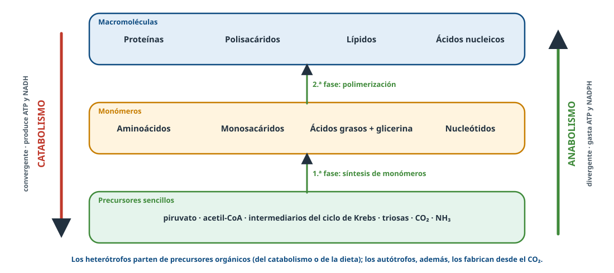
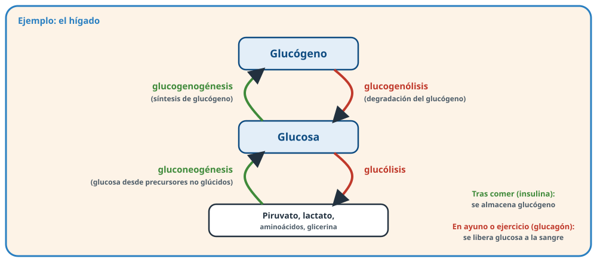
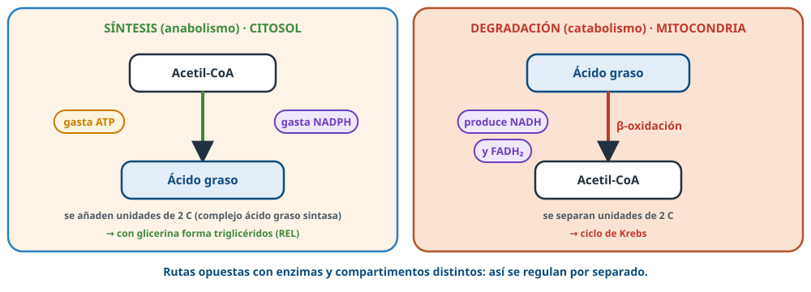
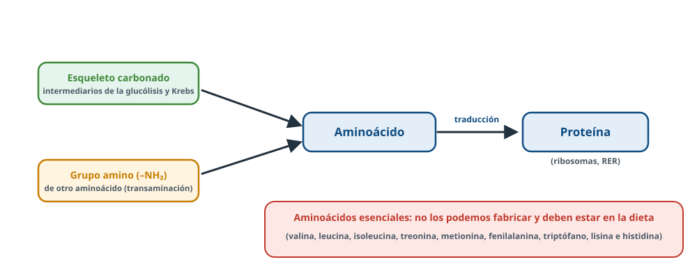

Palabra clave = lo que buscan los criterios oficiales de correcciónTexto en violeta = aclaración de BioCelia que no está en los criterios
1Qué entra en la PAU
Directrices de Andalucía 2026-27 · D.3.1
El catabolismo proporciona ATP y moléculas sencillas (aminoácidos, ácidos grasos, monosacáridos, nucleótidos) que, junto con otras del medio, son la materia prima y la energía del anabolismo: ambas rutas son complementarias y coordinadas.
Esquematizar las fases y procesos del anabolismo.
Saber que las células sintetizan aminoácidos, proteínas, ácidos grasos y ácidos nucleicos a partir de metabolitos sencillos, sin detallar las rutas.
Cómo se pregunta
Sobre todo como definiciones (anabolismo, anabolismo heterótrofo, divergencia metabólica) y en situaciones prácticas: glucógeno tras comer o tras el ejercicio, musculación y dieta, aminoácidos esenciales.
2Concepto y fases
Anabolismo: síntesis de moléculas complejas a partir de sencillas con gasto de energía (ATP); usa también poder reductor (NADPH).
Anabolismo autótrofo: síntesis de moléculas orgánicas a partir de materia inorgánica (CO₂, H₂O): fotosíntesis y quimiosíntesis.
Anabolismo heterótrofo: a partir de precursores orgánicos sencillos (glucosa, aminoácidos…) se obtienen moléculas orgánicas más complejas. Lo realizan todas las células, también las de los autótrofos.
Es divergente: a partir de unos pocos sustratos se forman muchos productos diferentes (al contrario que el catabolismo, que es convergente).

Figura 1. Fases del anabolismo y del catabolismo.
Síntesis de monómeros a partir de precursores sencillos (metabolitos del metabolismo central).
Polimerización: unión de monómeros en macromoléculas.
Ocurre sobre todo en el citosol, el retículo endoplasmático (lípidos y proteínas de membrana y de secreción), los ribosomas (proteínas), el complejo de Golgi (glucosilación, polisacáridos de la pared vegetal) y el núcleo (ADN y ARN).
3Síntesis de glúcidos

Figura 2. Síntesis y degradación del glucógeno y de la glucosa.
Gluconeogénesis: síntesis de glucosa a partir de precursores que no son glúcidos (lactato, aminoácidos, glicerol). Ocurre sobre todo en el hígado, en el ayuno, y mantiene la glucosa en sangre (el cerebro y los glóbulos rojos dependen de ella).
Glucogenogénesis: síntesis de glucógeno a partir de glucosa, en el hígado y el músculo, cuando sobra glucosa.
En las plantas, la glucosa del ciclo de Calvin forma almidón (reserva, en los plastos), sacarosa (transporte) y celulosa (pared).
Así lo preguntan (PAU 2018)
Tras una comida rica en pasta, los gránulos de glucógeno del hígado son grandes: la pasta aporta muchos carbohidratos, que dan glucosa, y en el hígado se almacena como glucógeno. Tras el ayuno o una carrera desaparecen: el glucógeno se degrada para abastecer de glucosa a la sangre y a los tejidos.
4Síntesis de lípidos

Figura 3. Síntesis y degradación de los ácidos grasos: rutas separadas.
Ácidos grasos: se fabrican en el citosol a partir de acetil-CoA (procedente, por ejemplo, del exceso de glucosa), añadiendo unidades de dos carbonos y gastando ATP y NADPH.
Triglicéridos: los ácidos grasos se unen a la glicerina (en el REL); se almacenan en el tejido adiposo. Por eso el exceso de glúcidos en la dieta se acumula como grasa.
Fosfolípidos y colesterol: en el retículo endoplasmático liso; el colesterol es precursor de las hormonas esteroideas y de la vitamina D.
Los animales no podemos fabricar algunos ácidos grasos poliinsaturados (linoleico y linolénico, de las familias omega-6 y omega-3), que son esenciales y deben tomarse en la dieta.
5Aminoácidos y proteínas

Figura 4. De los precursores a las proteínas.
Aminoácidos: se forman a partir de esqueletos carbonados (intermediarios de la glucólisis y del ciclo de Krebs) que reciben un grupo amino, normalmente de otro aminoácido (transaminación). Las plantas y muchos microorganismos los fabrican todos con el nitrógeno del suelo (nitratos, amonio).
Aminoácidos esenciales: los que no podemos sintetizar y deben estar en la dieta. Por eso una dieta para ganar músculo debe ser rica en proteínas.
Proteínas: se sintetizan por traducción en los ribosomas (libres o del RER), siguiendo la información del ARNm (ver genética molecular). Gastan mucha energía (ATP y GTP).
6Nucleótidos y ácidos nucleicos
Los nucleótidos se fabrican a partir de una pentosa (ribosa-5-fosfato, que procede de la glucosa), aminoácidos (aportan el nitrógeno de las bases), CO₂ y fosfato. Las células también reciclan bases y nucleótidos.
Los ácidos nucleicos se sintetizan en la replicación (ADN) y la transcripción (ARN), en el núcleo (y en mitocondrias y cloroplastos).
7Relación con el catabolismo
El catabolismo aporta energía (ATP), poder reductor y precursores; el anabolismo los consume.
Ambos ocurren a la vez y se regulan: cuando hay energía y nutrientes de sobra predomina el anabolismo (crecimiento, reservas); en el ayuno o el ejercicio, el catabolismo. En un adulto de peso estable están equilibrados.
Rutas opuestas (síntesis y degradación de glucógeno o de ácidos grasos) usan enzimas distintas y a menudo compartimentos distintos, para poder regularlas por separado. Hormonas como la insulina (favorece el anabolismo) y el glucagón (favorece el catabolismo) las coordinan.
8Así se pregunta en la PAU
PAU 2021 · Reserva junio2 puntos
En relación con el anabolismo, defina: a) divergencia metabólica; b) quimiosíntesis; c) anabolismo heterótrofo; d) fotosíntesis [2].
Ver respuesta modelo
a) A partir de unos pocos sustratos se forman muchos productos diferentes. b) Obtención de materia orgánica a partir de inorgánica con la energía de reacciones químicas de oxidación. c) A partir de precursores orgánicos sencillos se obtienen moléculas orgánicas más complejas. d) Captación de la energía de la luz para transformar materia inorgánica en orgánica.
PAU 2024 · Suplente B2 puntos
Defina: a) anabolismo; b) anabolismo autótrofo; c) anabolismo heterótrofo; d) quimiosíntesis [2].
Ver respuesta modelo
a) Síntesis de moléculas complejas a partir de sencillas con gasto de energía (ATP). b) Síntesis de moléculas orgánicas a partir de materia inorgánica. c) Síntesis de moléculas orgánicas más complejas a partir de orgánicas sencillas (glucosa, aminoácidos). d) Síntesis de materia orgánica a partir de inorgánica con la energía de reacciones químicas de compuestos inorgánicos.
PAU 2018 · Suplente junio1 punto
Tras una alimentación rica en pasta los gránulos de glucógeno de los hepatocitos son grandes y abundantes; tras un día de ayuno o una carrera ciclista casi desaparecen. Explíquelo [1].
Ver respuesta modelo
La pasta aporta muchos carbohidratos que se transforman en glucosa, que en el hígado se almacena como glucógeno (glucogenogénesis). Tras el ayuno o el ejercicio, el glucógeno se degrada para abastecer de glucosa a la sangre y a los tejidos.
PAU 2025 · Castilla y León0,3 puntos
Defina los términos gluconeogénesis y glucogenogénesis.
Ver respuesta modelo
Gluconeogénesis: síntesis de glucosa a partir de precursores que no son glúcidos (lactato, aminoácidos, glicerol). Glucogenogénesis: síntesis de glucógeno a partir de glucosa.
PAU 2025 · Asturias2,5 puntosCompetencial
Un adulto hace musculación: pierde grasa, gana masa muscular y mantiene su peso. 1) ¿Han predominado el anabolismo o el catabolismo? 2) Describa una ruta de cada tipo y dónde ocurren. 3) ¿Podría conseguirlo con una dieta rica en glúcidos y pobre en proteínas?
Ver respuesta modelo
1) Como el peso no cambia, catabolismo y anabolismo están equilibrados. 2) Catabólica: lipólisis y β-oxidación en la matriz mitocondrial. Anabólica: síntesis de proteínas en los ribosomas del citoplasma o del RER. 3) No: necesita una dieta rica en proteínas, porque hay aminoácidos esenciales que no podemos sintetizar.
Práctica BioCelia · estilo 26-271 punto
Una persona toma durante meses más glúcidos de los que gasta, sin apenas grasa en la dieta, y aumenta su tejido adiposo. a) ¿Cómo es posible? [0,6] b) ¿En qué compartimentos celulares ocurren los procesos implicados? [0,4]
Ver respuesta modelo
a) El exceso de glucosa se degrada por glucólisis hasta piruvato, que da acetil-CoA; a partir del acetil-CoA se sintetizan ácidos grasos (con ATP y NADPH), que se unen a la glicerina y forman triglicéridos, almacenados en los adipocitos. b) Glucólisis y síntesis de ácidos grasos en el citosol; formación del acetil-CoA en la mitocondria; formación de triglicéridos en el retículo endoplasmático liso.
¿Qué diferencia el anabolismo autótrofo del heterótrofo? VerEl autótrofo parte de materia inorgánica; el heterótrofo, de moléculas orgánicas sencillas.
¿Qué significa que el anabolismo es divergente? VerQue de pocos precursores salen muchos productos distintos.
¿Qué es la gluconeogénesis? VerLa síntesis de glucosa a partir de precursores no glúcidos (lactato, aminoácidos, glicerol).
¿Dónde se fabrican los ácidos grasos y desde qué molécula? VerEn el citosol, desde acetil-CoA, con ATP y NADPH.
¿Por qué engorda comer mucho azúcar? VerEl exceso de glucosa da acetil-CoA, con el que se fabrican ácidos grasos y triglicéridos.
¿Qué son los aminoácidos esenciales? VerLos que no podemos sintetizar y debemos tomar en la dieta.
¿Dónde se sintetizan las proteínas? VerEn los ribosomas, libres o unidos al RER.
Fuentes: Directrices y orientaciones de la PAU de Biología de Andalucía (curso 2026-27); criterios oficiales de corrección de la PAU de Andalucía (2018-2024) y de otras comunidades (2025); resúmenes del departamento; Lehninger, Principios de bioquímica. Esquemas: elaboración propia de BioCelia.